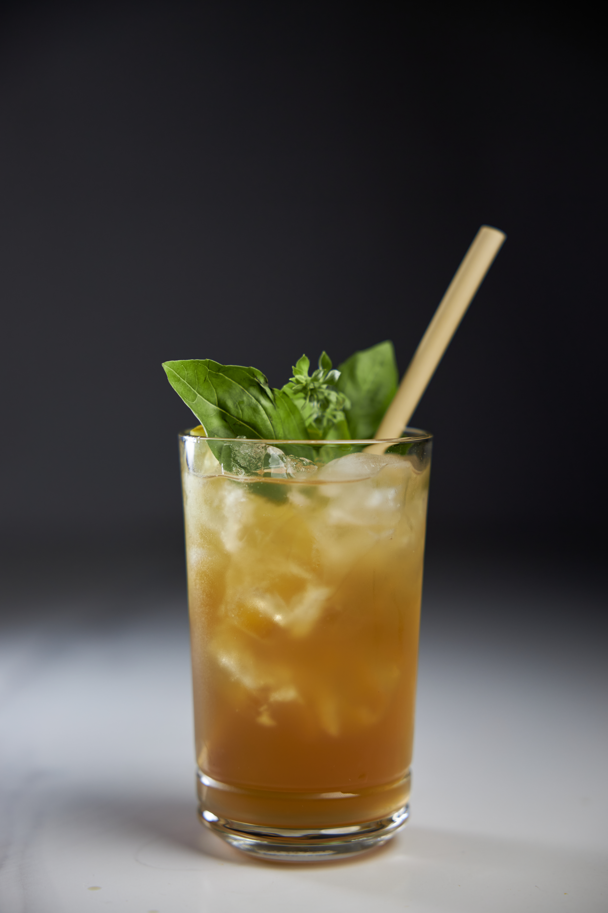

×
crafted for B BAGEL
Premium
Iced Tea
Programme
A curated range of premium tea-based beverages, designed for B BAGEL’s modern bagel experience — built for fast service, consistent execution and an exceptional guest experience.
No Preservatives
No Artificial Colours
No Flavour Extracts
The Range
01
Detox
Green Tea, Lemon Verbena, Mint & Lime
03
Consciousness
Jasmine Flowers & Lychee
About GT
Our vision
The better drink,
the easy choice,
for everyone.
So, what is GT?
Every GT bottle holds a natural concentrate of real tea, herbs and botanicals. No preservatives, no artificial additives, with just a little sugar — or none at all. And from the very same bottle, you can build a whole range of more indulgent, milk-based premium drinks.
20
Premium drinks
per bottle
0
Preservatives &
artificial additives
B BAGEL × GTPremium Tea Programme · 02
Made Simple
Ridiculously Easy
to Serve
a perfect pour in three simple moves
- 1Fill the cup with ice.
- 2Top up with cold water.
- 3Add the GT concentrate, give it a quick stir, finish with a twist of lemon or fresh mint — and serve.
GT was made for busy teams — easy to bring in, easy to run, every shift. A short video teaches every team member to pour a perfect cup in under a minute.
Your most profitable pour
GT is built to be the most profitable drink on your menu — high margin, no refrigeration, no space taken in the fridge. And it lifts your whole drinks menu into another league: every cup leaves the pass looking exceptional and upgrades any dish served beside it.
Trusted across
Hundreds of bakeries & food chains
B BAGEL × GTPremium Tea Programme · 03
Signature Beverage · 01
Detox
Green Tea, Lemon Verbena, Mint & Lime
A refreshing blend of premium green tea, aromatic lemon verbena, cooling mint and lime. Clean, bright and highly refreshing — a perfect all-day beverage.
Composition
Green Tea · Lemon Verbena · Mint · Lime
Caffeine
Contains natural caffeine
Garnish
Fresh mint · Lime slice
Fresh
Bright
Citrusy
Refreshing
Pairs with
Salmon Bagel
Avocado Bagel
Fresh Salads
No preservatives · No artificial colours · No flavour extracts
B BAGEL × GT · 04
17
kcal
/100ml
Preparation · 01
How to Serve
four steps, ice-cold, every time
- 1Fill the cup with ice.
- 2Add 250ml cold water.
- 3Add 50ml GT Detox concentrate.
- 4Stir gently, garnish with fresh mint & lime, and serve.
5 : 1
250ml water to 50ml concentrate. The concentrate is always added last.
B BAGEL × GTPREMIUM TEA PROGRAMME · 05
Signature Beverage · 02
Fresh
Hibiscus & Lime
A vibrant caffeine-free hibiscus infusion with bright citrus notes and a refreshing finish. Its striking ruby-red colour makes it a true standout on the menu.
Composition
Hibiscus · Lime
Vibrant
Fruity
Tart
Refreshing
Pairs with
Tuna Bagel
Chicken Caesar
Vegetarian
No preservatives · No artificial colours · No flavour extracts
B BAGEL × GT · 06
17
kcal
/100ml
Preparation · 02
How to Serve
four steps, ruby-red & refreshing
- 1Fill the cup with ice.
- 2Add 250ml cold water.
- 3Add 50ml GT Fresh concentrate.
- 4Stir gently, garnish with a lime wheel, and serve.
5 : 1
250ml water to 50ml concentrate. The concentrate is always added last.
B BAGEL × GTPREMIUM TEA PROGRAMME · 07
Signature Beverage · 03
Consciousness
Green Tea, Jasmine Flowers & Lychee
A premium green tea infused with fragrant jasmine flowers and smooth lychee. Inspired by Asian tea culture — an elegant, sophisticated flavour profile.
Composition
Green Tea · Jasmine Flowers · Lychee Purée
Caffeine
Contains natural caffeine
Garnish
Dried coconut · Lychee
Floral
Elegant
Smooth
Exotic
Pairs with
Asian Dishes
Breakfast
Sweet Bakery
No preservatives · No artificial colours · No flavour extracts
B BAGEL × GT · 08
17
kcal
/100ml

Consciousness
Iced · 400ml
Preparation · 03
How to Serve
four steps, floral & elegant
- 1Fill the cup with ice.
- 2Add 250ml cold water.
- 3Add 50ml GT Consciousness concentrate.
- 4Stir gently, garnish with dried coconut & lychee, and serve.
5 : 1
250ml water to 50ml concentrate. The concentrate is always added last.
B BAGEL × GTPREMIUM TEA PROGRAMME · 09
Signature Beverage · 04
Namastea
Masala Chai
A rich, aromatic Masala Chai inspired by traditional Indian recipes — black tea, Pu-erh and warming spices for a bold, comforting and memorable cup.
Composition
Black Tea · Pu-erh · Cinnamon · Cardamom · Ginger · Cloves · Black Pepper · Star Anise
Caffeine
Contains natural caffeine
Serve
Hot · 300ml / Iced · 400ml
Garnish
Cinnamon stick · Star anise
Spiced
Warm
Aromatic
Comforting
Pairs with
Breakfast Bagels
Pastries
Sweet Bakery
No preservatives · No artificial colours · No flavour extracts
B BAGEL × GT · 10
17
kcal
/100ml
Preparation · 04
How to Serve
Hot · 300ml · with milk
- 1Add 250ml hot milk of choice.
- 2Add 50ml GT Namastea concentrate.
- 3Stir gently and serve warm.
Milk · whole, semi-skimmed, oat, almond, soy or coconut
Iced · 400ml · with water
- 1Fill the cup with ice.
- 2Add 250ml cold water.
- 3Add 50ml GT Namastea concentrate.
- 4Stir gently and serve over ice.
Same 5 : 1 ratio as the teas — 250ml water to 50ml concentrate, added last.
B BAGEL × GTPREMIUM TEA PROGRAMME · 11
B BAGEL × GT
Premium Tea,
Made Simple
To make the better drink the easy choice for everyone.
Clean by design
No Preservatives
No Artificial Colours
No Flavour Extracts
The Four Signature Beverages
Detox
Green Tea · Lemon Verbena · Mint · Lime
Consciousness
Green Tea · Jasmine · Lychee
Namastea
Black Tea · Pu-erh · Chai Spices
The GT Ratio
5:1
250ml liquid to 50ml concentrate — every serve, concentrate added last.
Storage
Unopened — cool, dry place; no refrigeration needed.
After opening — keep refrigerated; best within 3 months.
The easy choice for everyone
GT Tea Concentrates
premium tea, made simple
Premium tea concentrates made from real tea, herbs, fruits & botanicals — for cafés, bakeries & hospitality.
GT · contact details to add
B BAGEL × GTPREMIUM TEA PROGRAMME · 12